Terminal / CLI
Agentes que vivem no terminal: Gemini CLI, Aider, OpenHands e afins.
16 links
| Vídeo | Projeto | O que faz | Pasta de origem | |
|---|---|---|---|---|
| Gemini CLI: Guia prático de como usar o novo age | 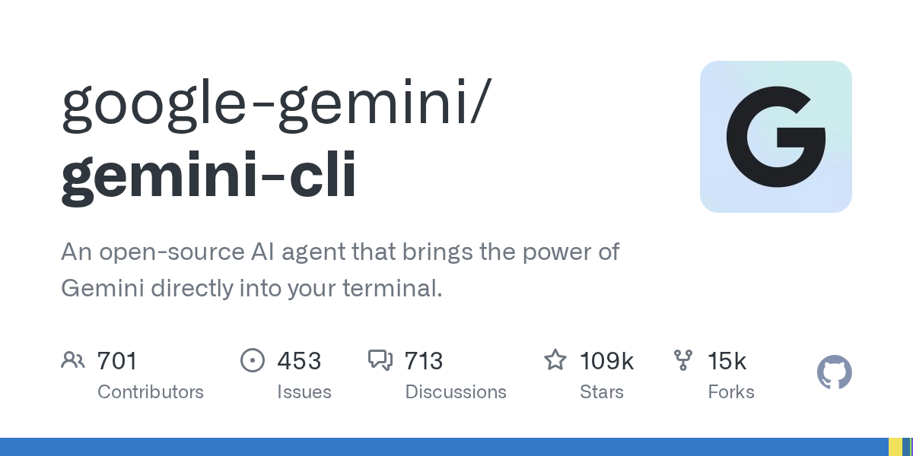 | google-gemini/gemini-cli | 108k★ · agente de IA do Gemini direto no terminal. | curado — busca na internet |
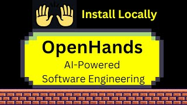 Instalar o OpenHands localmente - Engenheiro de |  | OpenHands/OpenHands | 93k★ · agente que escreve, testa e corrige software sozinho. | curado — busca na internet |
| Guia completo do Cline 2025: Concorrente do Curs | 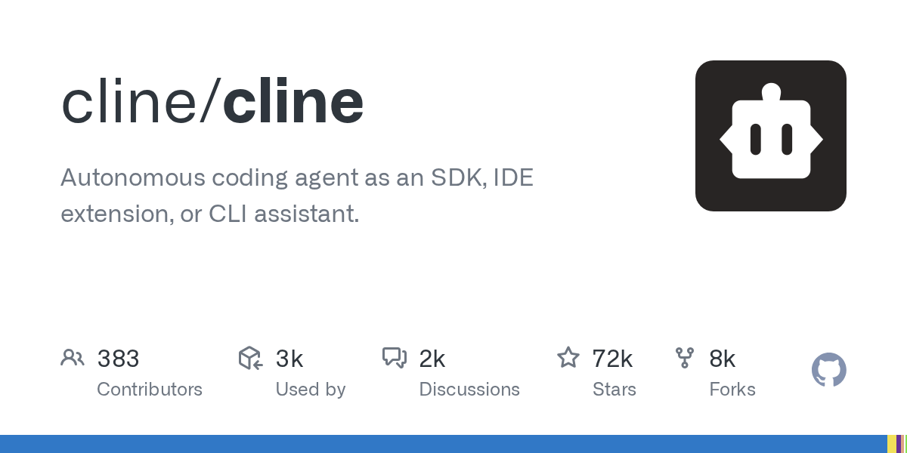 | cline/cline | 71k★ · agente que programa dentro do editor/CLI e pede aprovação. | curado — busca na internet |
| Open Interpreter | Criei um app em menos de 1 mi | 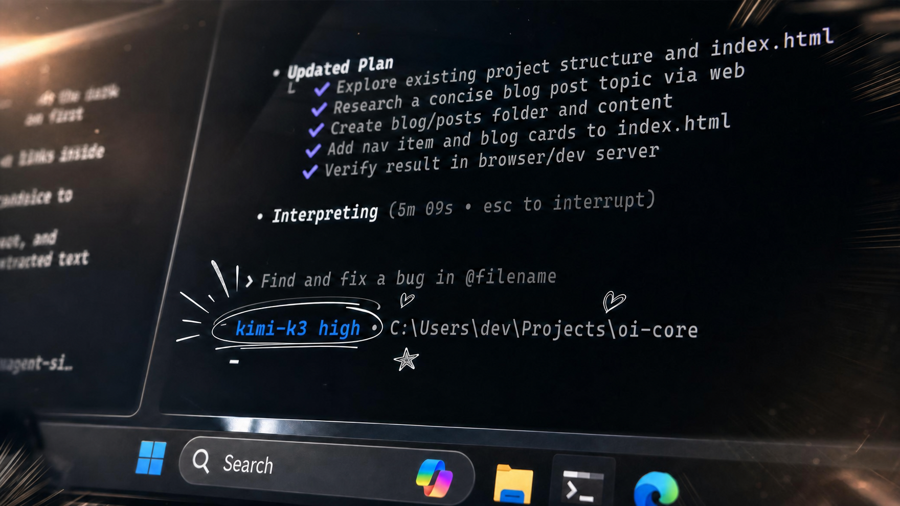 | openinterpreter/openinterpreter | 68k★ · escreve e roda código na sua máquina pra cumprir a tarefa. | curado — busca na internet |
| Herdr: Minha Central de Comando Para Claude Code | herdrdev/herdr | 50k★ · runtime onde os agentes de código rodam em paralelo. | curado — busca na internet | |
| O QUE É AIDER AI E COMO ESTE ASSISTENTE DE CÓDIG | Aider-AI/aider | 50k★ · pair programming de IA no terminal (edita seu repositório). | curado — busca na internet | |
| QWEN CODE: A IA GRÁTIS que vai ACELERAR seus pro | 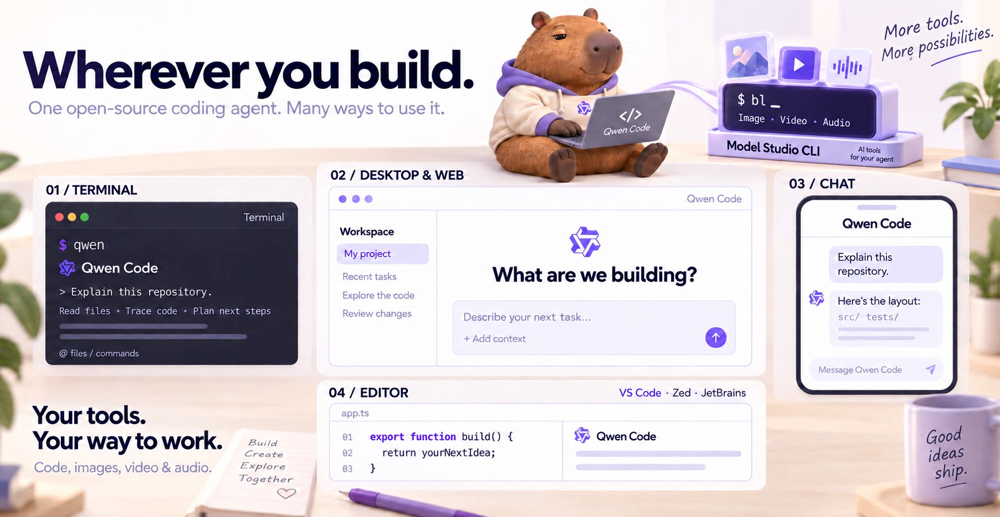 | QwenLM/qwen-code | 29k★ · agente de código da Qwen que vive no terminal. | curado — busca na internet |
| cmux + Obsidian: Como Rodo 5 Agentes de IA em Pa | 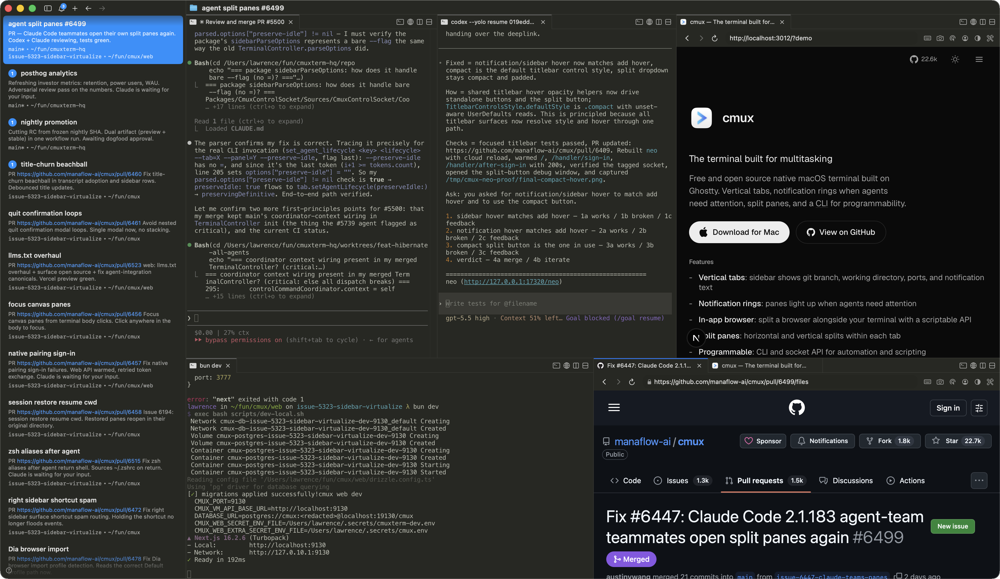 | manaflow-ai/cmux | 28k★ · terminal com abas verticais e avisos para agentes. | curado — busca na internet |
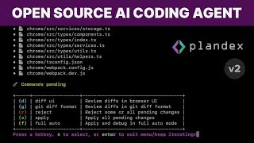 An open source AI coding agent for real world pr | 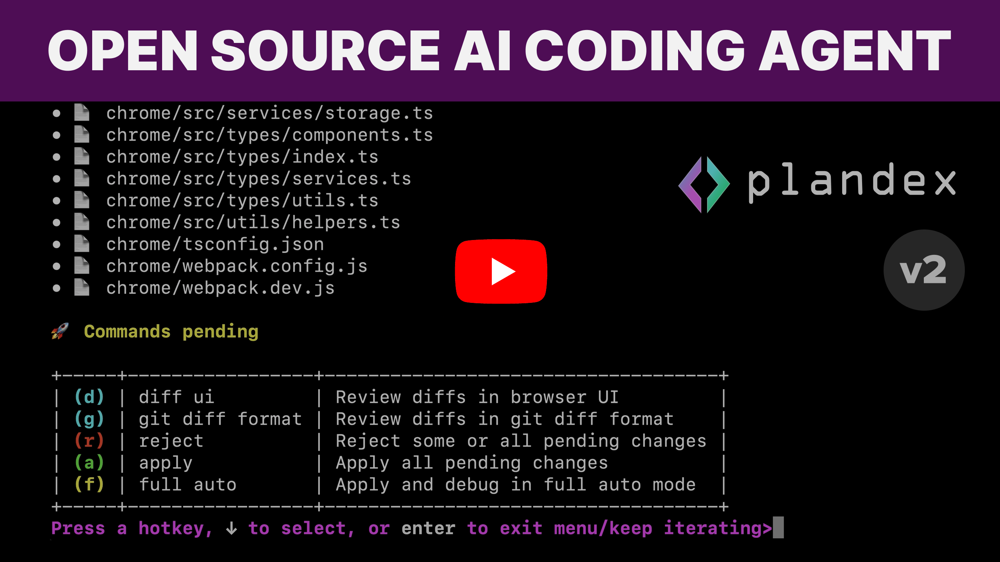 | plandex-ai/plandex | 15k★ · agente para projetos grandes, com plano e contexto. | curado — busca na internet |
| ChatPGT - COMO GERAR UM SCRIPT EM SHELL UTILIZAN | 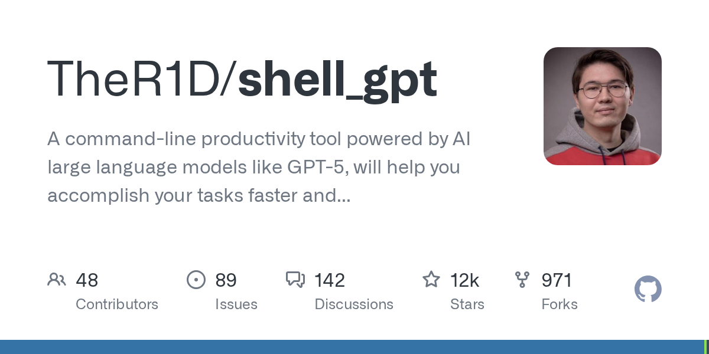 | TheR1D/shell_gpt | 12k★ · comandos e respostas de IA no shell. | curado — busca na internet |
| COMO CRIAR teu TIME DE AGENTES de IA do zero no | 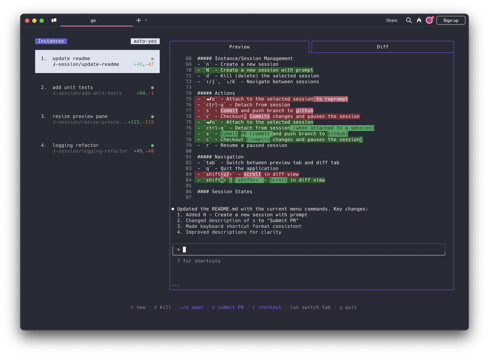 | smtg-ai/claude-squad | 8.7k★ · gerencia vários agentes de terminal ao mesmo tempo. | curado — busca na internet |
| ABTOP - Dzhivan | #vavilonmusic #Dizhivan #abtop | 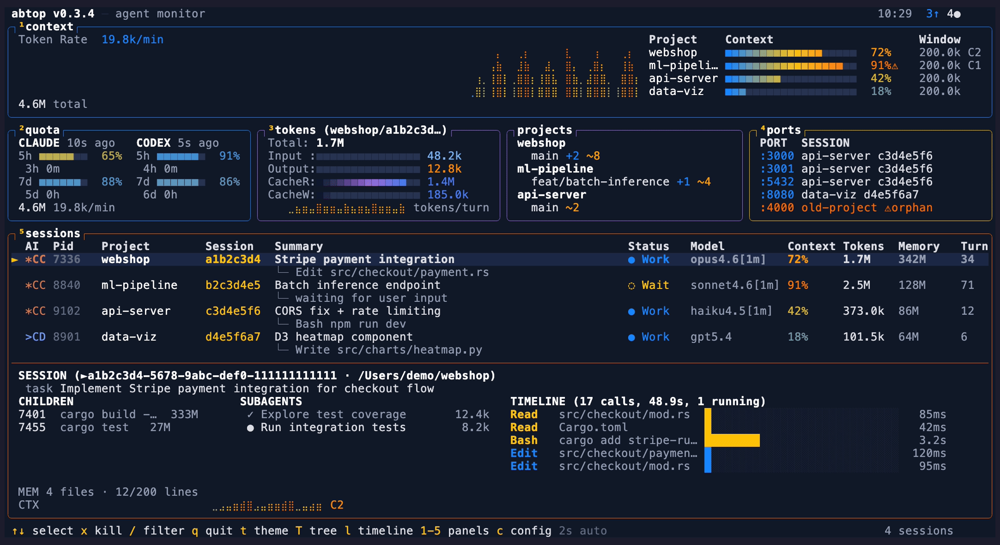 | graykode/abtop | 3.8k★ · “htop dos agentes”: tokens e sessões em tempo real. | curado — busca na internet |
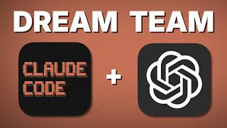 Claude Code + Codex = Deus IA |  | SeemSeam/claude_codex_bridge | 3.6k★ · mistura Codex, Claude, Gemini e Kimi num workspace só. | curado — busca na internet |
 Tutorial do Warp Terminal - agentes de IA no terminal Tutorial do Warp Terminal - agentes de IA no terminal |  | Warp (site oficial) | Terminal com IA para devs: agentes, blocos de comando e nuvem. | IA · Terminal / CLI |
 O melhor terminal para devs no Windows: WARP O melhor terminal para devs no Windows: WARP |  | Warp (download) | Página de download do Warp para Windows, macOS e Linux. | IA · Terminal / CLI |
| sem vídeo |  | t128n/warp-companion | Companheiro do Warp: utilitários e integrações para o terminal. | IA · Terminal / CLI |